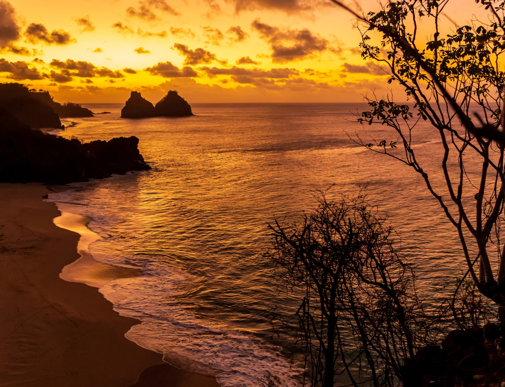
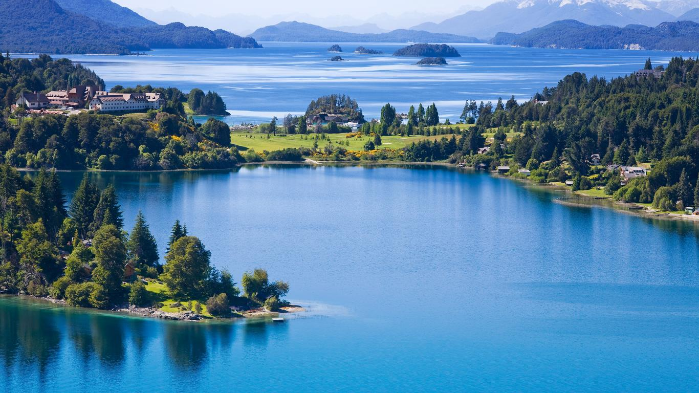
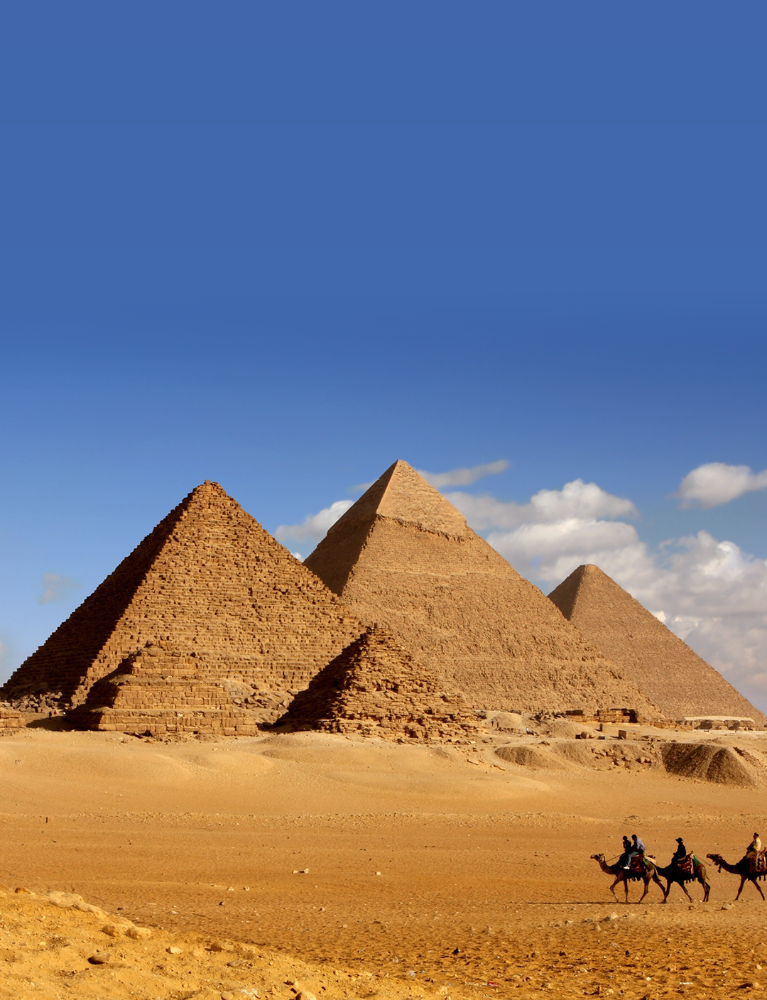
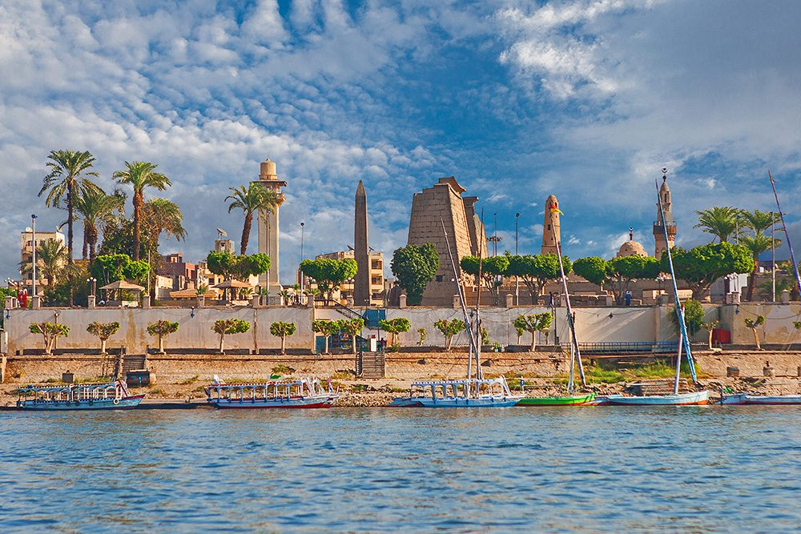

Imagine-se mergulhando em águas cristalinas, cercado por golfinhos, tartarugas e paisagens que parecem ter saído de um sonho. Fernando de Noronha é o destino perfeito para quem quer se desconectar do mundo e se conectar com a natureza. Neste paraíso brasileiro, cada pôr do sol é um espetáculo e cada praia revela um segredo. Prepare-se para viver dias de paz, aventura e beleza indescritível.

🏙️ City Tour Europa – Paris, Roma e Barcelona
Três das cidades mais fascinantes da Europa te esperam em uma viagem inesquecível. Deixe-se encantar pela elegância de Paris, caminhe pelas ruínas históricas de Roma e se perca nas cores e sabores vibrantes de Barcelona. Uma jornada entre o clássico e o moderno, cheia de arte, gastronomia, cultura e experiências únicas. Ideal para quem quer mergulhar no coração da Europa em grande estilo.
❄️ Aventura na Neve – Bariloche
Bariloche é o cenário perfeito para quem sonha com paisagens cobertas de neve, lareiras acolhedoras e dias cheios de emoção. Aqui, você vai se divertir esquiando, se maravilhar com os lagos congelados e saborear os famosos chocolates artesanais da região. É a combinação perfeita entre aventura e conforto em um dos destinos mais charmosos da América do Sul.

🛕 Cultura e História – Egito Clássico
Viajar ao Egito é voltar no tempo e testemunhar a grandiosidade de uma das civilizações mais fascinantes da história. Neste roteiro exclusivo, você vai explorar templos milenares, navegar pelo mítico Rio Nilo e ficar frente a frente com as imponentes pirâmides de Gizé. Uma experiência transformadora, que une história, mistério e beleza em cada detalhe. Viva essa jornada inesquecível.


🧘 Bem-estar e Natureza – Chapada dos Veadeiros
Se o que você procura é equilíbrio, conexão interior e natureza exuberante, a Chapada dos Veadeiros é o seu destino ideal. Em meio a cachoeiras cristalinas e paisagens de tirar o fôlego, você vai encontrar tempo para respirar, desacelerar e cuidar de si. Encontros com o sagrado, trilhas energizantes e momentos de meditação esperam por você nesse refúgio mágico no coração do Brasil.